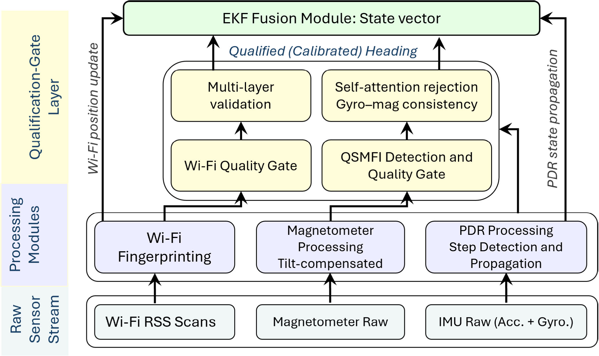
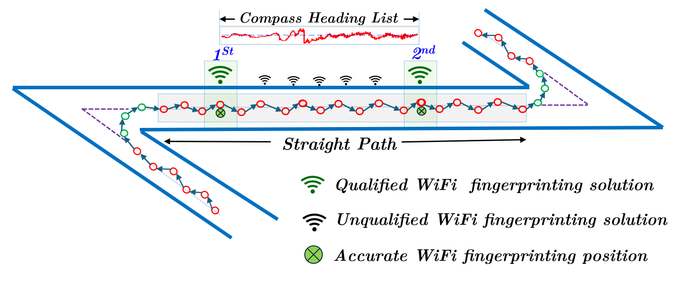

Drift-Resistant Heading Estimation for Smartphone-Based Indoor Positioning via Adaptive Calibration Using Wi-Fi Fingerprinting and Magnetic Stability
Paper preview

Key figures


Summary
This paper introduces an adaptive heading-calibration method that uses Wi-Fi fingerprinting continuity and magnetic stability to reduce smartphone heading drift for indoor positioning and navigation.
When to cite this paper
- smartphone heading drift is discussed in PDR or indoor navigation
- Wi-Fi fingerprinting is used beyond position estimation for heading calibration
- magnetic stability and adaptive thresholds are used for reliability control
- deployment-ready smartphone positioning requires drift-resistant orientation estimation
Keywords
heading estimationsmartphone indoor positioningWi-Fi fingerprintingmagnetic stabilityadaptive calibrationPDRsensor fusion
Official link
https://doi.org/10.1109/TIM.2026.3661693
For publisher-restricted articles, link to the DOI or an allowed accepted manuscript rather than uploading a restricted PDF.
BibTeX
@article{Mansour2026driftresistant,
title = {Drift-Resistant Heading Estimation for Smartphone-Based Indoor Positioning via Adaptive Calibration Using Wi-Fi Fingerprinting and Magnetic Stability},
author = {Ahmed Mansour and Jingxian Wang and Huan Luo and Mahmoud Adham and Junhua Ye and Wu Chen},
year = {2026},
journal = {IEEE Transactions on Instrumentation and Measurement},
doi = {10.1109/TIM.2026.3661693},
}